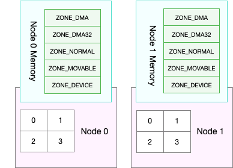

文件页（File-backed Page）
大部分文件页，都可以直接回收，以后有需要时，再从磁盘重新读取就可以了。而那些被应用程序修改过，并且暂时还没写入磁盘的数据（也就是脏页），就得先写入磁盘，然后才能进行内存释放。
- 可以在应用程序中，通过系统调用 fsync ，把脏页同步到磁盘中；
- 也可以交给系统，由内核线程 pdflush 负责这些脏页的刷新。
Swap 原理
它包括换出和换入两个过程。
- 所谓换出，就是把进程暂时不用的内存数据存储到磁盘中，并释放这些数据占用的内存。
- 而换入，则是在进程再次访问这些内存的时候，把它们从磁盘读到内存中来。
- Swap 其实是把系统的可用内存变大了。这样，即使服务器的内存不足，也可以运行大内存的应用程序。
- 直接内存回收
- 定期回收内存，也就是 kswapd0
- 三个内存阈值（watermark，也称为水位
- 页最小阈值（pages_min）
- 页低阈值（pages_low）
- 页高阈值（pages_high）
- 剩余内存，则使用 pages_free 表示
kswapd0 定期扫描内存的使用情况，并根据剩余内存落在这三个阈值的空间位置，进行内存的回收操作。
- 剩余内存小于页最小阈值，说明进程可用内存都耗尽了，只有内核才可以分配内存。
- 剩余内存落在页最小阈值和页低阈值中间，说明内存压力比较大，剩余内存不多了。这时 kswapd0 会执行内存回收，直到剩余内存大于高阈值为止。
- 剩余内存落在页低阈值和页高阈值中间，说明内存有一定压力，但还可以满足新内存请求。
- 剩余内存大于页高阈值，说明剩余内存比较多，没有内存压力。
- 一旦剩余内存小于页低阈值，就会触发内存的回收
- 页低阈值，其实可以通过内核选项 /proc/sys/vm/min_free_kbytes 来间接设置
- min_free_kbytes 设置了页最小阈值，而其他两个阈值，都是根据页最小阈值计算生成的，计算方法如下 ：
pages_low = pages_min*5/4
pages_high = pages_min*3/2
NUMA 与 Swap
很多情况下，你\明明发现了 Swap 升高，可是在分析系统的内存使用时，却很可能发现，系统剩余内存还多着呢。为什么剩余内存很多的情况下，也会发生 Swap 呢？:::::::正是处理器的 NUMA （Non-Uniform Memory Access）架构导致的。
在 NUMA 架构下，多个处理器被划分到不同 Node 上，且每个 Node 都拥有自己的本地内存空间。

工具numactl：查看处理器在 Node 的分布情况，以及每个 Node 的内存使用情况
zsy@ubuntu:~$ numactl --hardware
available: 1 nodes (0)
node 0 cpus: 0 1
node 0 size: 1981 MB
node 0 free: 190 MB
node distances:
node 0
0: 10
提到的三个内存阈值（页最小阈值、页低阈值和页高阈值），都可以通过内存域在 proc 文件系统中的接口 /proc/zoneinfo 来查看：
zsy@ubuntu:~$ cat /proc/zoneinfo
Node 0, zone DMA
per-node stats
nr_inactive_anon 173802
nr_active_anon 133182
nr_inactive_file 32771
nr_active_file 56062
nr_unevictable 0
nr_slab_reclaimable 17327
nr_slab_unreclaimable 29472
nr_isolated_anon 0
nr_isolated_file 0
workingset_nodes 2058
workingset_refault 155937
workingset_activate 33796
workingset_restore 15995
workingset_nodereclaim 945
nr_anon_pages 164627
nr_mapped 31095
nr_file_pages 232300
nr_dirty 14
nr_writeback 0
nr_writeback_temp 0
nr_shmem 141403
nr_shmem_hugepages 0
nr_shmem_pmdmapped 0
nr_file_hugepages 0
nr_file_pmdmapped 0
nr_anon_transparent_hugepages 0
nr_unstable 0
nr_vmscan_write 243216
nr_vmscan_immediate_reclaim 732
nr_dirtied 413853
nr_written 596735
nr_kernel_misc_reclaimable 0
pages free 2018
min 90
low 112
high 134
spanned 4095
present 3998
managed 3977
protection: (0, 1910, 1910, 1910, 1910)
nr_free_pages 2018
nr_zone_inactive_anon 1943
nr_zone_active_anon 0
nr_zone_inactive_file 0
nr_zone_active_file 0
nr_zone_unevictable 0
nr_zone_write_pending 0
nr_mlock 0
nr_page_table_pages 0
nr_kernel_stack 0
nr_bounce 0
nr_zspages 0
nr_free_cma 0
numa_hit 5877
numa_miss 0
numa_foreign 0
numa_interleave 0
numa_local 5877
numa_other 0
pagesets
cpu: 0
count: 0
high: 0
batch: 1
vm stats threshold: 4
cpu: 1
count: 0
high: 0
batch: 1
vm stats threshold: 4
node_unreclaimable: 0
start_pfn: 1
Node 0, zone DMA32
pages free 44994
min 11173
low 13966
high 16759
spanned 520172
present 520172
managed 503219
protection: (0, 0, 0, 0, 0)
nr_free_pages 44994
nr_zone_inactive_anon 171859
nr_zone_active_anon 133182
nr_zone_inactive_file 32771
nr_zone_active_file 56062
nr_zone_unevictable 0
nr_zone_write_pending 14
nr_mlock 0
nr_page_table_pages 4398
nr_kernel_stack 10464
nr_bounce 0
nr_zspages 0
nr_free_cma 0
numa_hit 11427432
numa_miss 0
numa_foreign 0
numa_interleave 39965
numa_local 11427432
numa_other 0
pagesets
cpu: 0
count: 148
high: 378
batch: 63
vm stats threshold: 20
cpu: 1
count: 338
high: 378
batch: 63
vm stats threshold: 20
node_unreclaimable: 0
start_pfn: 4096
Node 0, zone Normal
pages free 0
min 0
low 0
high 0
spanned 0
present 0
managed 0
protection: (0, 0, 0, 0, 0)
Node 0, zone Movable
pages free 0
min 0
low 0
high 0
spanned 0
present 0
managed 0
protection: (0, 0, 0, 0, 0)
Node 0, zone Device
pages free 0
min 0
low 0
high 0
spanned 0
present 0
managed 0
protection: (0, 0, 0, 0, 0)
- pages 处的 min、low、high，就是上面提到的三个内存阈值，而 free 是剩余内存页数，它跟后面的 nr_free_pages 相同。
- nr_zone_active_anon 和 nr_zone_inactive_anon，分别是活跃和非活跃的匿名页数。
- nr_zone_active_file 和 nr_zone_inactive_file，分别是活跃和非活跃的文件页数。
某个 Node 内存不足时，系统可以从其他 Node 寻找空闲内存，也可以从本地内存中回收内存。具体选哪种模式，你可以通过 /proc/sys/vm/zone_reclaim_mode 来调整。它支持以下几个选项：
- 默认的 0 ，也表示既可以从其他 Node 寻找空闲内存，也可以从本地回收内存。
- 1、2、4 都表示只回收本地内存，2 表示可以回写脏数据回收内存，4 表示可以用 Swap 方式回收内存。
swappiness
- 对文件页的回收，当然就是直接回收缓存，或者把脏页写回磁盘后再回收。
- 而对匿名页的回收，其实就是通过 Swap 机制，把它们写入磁盘后再释放内存。
Linux 提供了一个 /proc/sys/vm/swappiness 选项，用来调整使用 Swap 的积极程度。
swappiness 的范围是 0-100，数值越大，越积极使用 Swap，也就是更倾向于回收匿名页；数值越小，越消极使用 Swap，也就是更倾向于回收文件页。